| Fields Medal | |
|---|---|
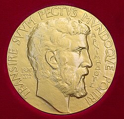 Archimedes is featured on obverse | |
| Awarded for | Outstanding mathematicians under 40 |
| Presented by | International Mathematical Union |
| Reverse | 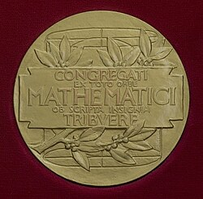 |
| Reward | CA$15,000 |
| First award | 1936 |
| Website | mathunion |
{kind=link}
{kind=link}
The Fields Medal is a prize awarded to two, three, or four mathematicians under 40 years of age at the International Congress of Mathematicians (ICM) of the International Mathematical Union (IMU), a convention which takes place every four years. The name of the award honors the Canadian mathematician John Charles Fields.[1] Its purpose is to give recognition and support to younger mathematical researchers who have made major contributions to the field of mathematics.
The Fields Medal is regarded as one of the highest honors a mathematician can receive, according to the annual Academic Excellence Survey by ARWU,[2] and has been described as the "Nobel Prize of Mathematics".[3][4][5] In another reputation survey conducted by IREG in 2013–2014, the Fields Medal came closely after the Abel Prize as the second most prestigious international award in mathematics.[6][7]
The medal was first awarded in 1936 to Finnish mathematician Lars Ahlfors and American mathematician Jesse Douglas, and it has been awarded every four years since 1950. In 2014, the Iranian mathematician Maryam Mirzakhani became the first female Fields Medalist.[8][9][10] With the exception of two Ph.D. holders in physics (Edward Witten and Martin Hairer),[11] only people with a Ph.D. in mathematics have won the medal.[12] In total, 68 people have been awarded the Fields Medal as of 2026.[13] The most recent group of Fields Medalists received their awards on 23 July 2026, in Philadelphia.
Fields was instrumental in establishing the award, designing the medal himself and funding the monetary component, though he died before it was established and his plan was overseen by John Lighton Synge.[1] The prize includes a monetary award which, since 2006, has been CA$15,000.[14][15]
Conditions of the award
The Fields Medal is widely regarded as one of the most prestigious awards in the field of mathematics and is often described as the "Nobel Prize of Mathematics".[16] However, unlike the Nobel Prize, the Fields Medal is awarded once every four years and includes an age restriction: recipients must be under 40 years of age on 1 January of the year in which the medal is awarded.[17]
The age limit reflects the intention of John Charles Fields that the award should not only recognize outstanding work already completed, but also encourage further achievement by the recipients and stimulate renewed effort among other mathematicians. In addition, an individual may receive the Fields Medal only once and is not eligible for future awards.[17]
List of Fields medalists
In certain years, the Fields medalists have been officially cited for particular mathematical achievements, while in other years such specificities have not been given. However, in every year that the medal has been awarded, noted mathematicians have lectured at the International Congress of Mathematicians (ICM) on each medalist's body of work. In the following table, official citations are quoted when possible (namely for the years 1958, 1998, and every year since 2006). For the other years through 1986, summaries of the ICM lectures, as written by Donald Albers, Gerald L. Alexanderson, and Constance Reid, are quoted.[18] In the remaining years (1990, 1994, and 2002), part of the text of the ICM lecture itself has been quoted. The most recent awarding of the Fields Medal at the 2026 International Congress of the International Mathematical Union was in Philadelphia.[19]
| Year | ICM location | Medalists[20] | Affiliation (when awarded) |
Affiliation (current/last) |
Reasons | |
|---|---|---|---|---|---|---|
| 1936 | Oslo, Norway | 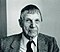 |
Lars Ahlfors | University of Helsinki, Finland | Harvard University, US[21][22] | "Awarded medal for research on covering surfaces related to Riemann surfaces of inverse functions of entire and meromorphic functions. Opened up new fields of analysis."[23] |
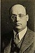 |
Jesse Douglas | Massachusetts Institute of Technology, US | City College of New York, US[24][25] | "Did important work on the Plateau problem which is concerned with finding minimal surfaces connecting and determined by some fixed boundary."[23] | ||
| 1950 | Cambridge, US | 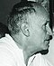 |
Laurent Schwartz | University of Nancy, France | University of Paris VII, France[26][27] | "Developed the theory of distributions, a new notion of generalized function motivated by the Dirac delta-function of theoretical physics."[28] |
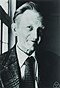 |
Atle Selberg | Institute for Advanced Study, US[29] | "Developed generalizations of the sieve methods of Viggo Brun; achieved major results on zeros of the Riemann zeta function; gave an elementary proof of the prime number theorem (with P. Erdős), with a generalization to prime numbers in an arbitrary arithmetic progression."[28] | |||
| 1954 | Amsterdam, Netherlands | 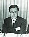 |
Kunihiko Kodaira | Princeton University, US
Institute for Advanced Study, US[30] University of Tokyo, Japan |
University of Tokyo, Japan[31] | "Achieved major results in the theory of harmonic integrals and numerous applications to Kählerian and more specifically to algebraic varieties. He demonstrated, by sheaf cohomology, that such varieties are Hodge manifolds."[32] |
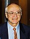 |
Jean-Pierre Serre | University of Nancy, France | Collège de France, France[33][34] | "Achieved major results on the homotopy groups of spheres, especially in his use of the method of spectral sequences. Reformulated and extended some of the main results of complex variable theory in terms of sheaves."[32] | ||
| 1958 | Edinburgh, UK | Klaus Roth | Imperial College London, UK[35] | "for solving a famous problem of number theory, namely, the determination of the exact exponent in the Thue-Siegel inequality"[36] | ||
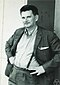 |
René Thom | University of Strasbourg, France | Institut des hautes études scientifiques, France[37] | "for creating the theory of 'Cobordisme' which has, within the few years of its existence, led to the most penetrating insight into the topology of differentiable manifolds."[36] | ||
| 1962 | Stockholm, Sweden | 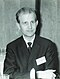 |
Lars Hörmander | Stockholm University, Sweden | Lund University, Sweden[38] | "Worked in partial differential equations. Specifically, contributed to the general theory of linear differential operators. The questions go back to one of Hilbert's problems at the 1900 congress."[39] |
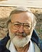 |
John Milnor | Princeton University, US | Stony Brook University, US[40] | "Proved that a 7-dimensional sphere can have several differential structures; this led to the creation of the field of differential topology" (see exotic sphere).[39] | ||
| 1966 | Moscow, USSR | 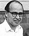 |
Michael Atiyah | University of Oxford, UK | University of Edinburgh, UK[41] | "Did joint work with Hirzebruch in K-theory; proved jointly with Singer the index theorem of elliptic operators on complex manifolds; worked in collaboration with Bott to prove a fixed point theorem related to the 'Lefschetz formula'."[42] |
| Paul Cohen | Stanford University, US[43] | "Used technique called "forcing" to prove the independence in set theory of the axiom of choice and of the generalized continuum hypothesis. The latter problem was the first of Hilbert's problems of the 1900 Congress."[42] | ||||
| Alexander Grothendieck | Institut des hautes études scientifiques, France | Centre National de la Recherche Scientifique, France[44] | "Built on work of Weil and Zariski and effected fundamental advances in algebraic geometry. He introduced the idea of K-theory (the Grothendieck groups and rings). Revolutionized homological algebra in his celebrated 'Tôhoku paper'."[42] | |||
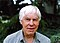 |
Stephen Smale | University of California, Berkeley, US | City University of Hong Kong, Hong Kong[45] | "Worked in differential topology where he proved the generalized Poincaré conjecture in dimension : Every closed, n-dimensional manifold homotopy-equivalent to the n-dimensional sphere is homeomorphic to it. Introduced the method of handle-bodies to solve this and related problems."[42] | ||
| 1970 | Nice, France | 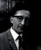 |
Alan Baker | University of Cambridge, UK | Trinity College, Cambridge, UK[46] | "Generalized the Gelfond-Schneider theorem (the solution to Hilbert's seventh problem). From this work he generated transcendental numbers not previously identified."[47] |
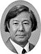 |
Heisuke Hironaka | Harvard University, US | Kyoto University, Japan[48][49] | "Generalized work of Zariski who had proved for dimension ≤ 3 the theorem concerning the resolution of singularities on an algebraic variety. Hironaka proved the results in any dimension."[47] | ||
| Sergei Novikov | Moscow State University, USSR | Steklov Mathematical Institute, Russia
Moscow State University, Russia University of Maryland-College Park, US[50][51] |
"Made important advances in topology, the most well-known being his proof of the topological invariance of the Pontryagin classes of the differentiable manifold. His work included a study of the cohomology and homotopy of Thom spaces."[47] | |||
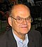 |
John G. Thompson | University of Cambridge, UK | University of Cambridge, UK | "Proved jointly with W. Feit that all non-cyclic finite simple groups have even order. The extension of this work by Thompson determined the minimal simple finite groups, that is, the simple finite groups whose proper subgroups are solvable."[47] | ||
| 1974 | Vancouver, Canada | Enrico Bombieri | University of Pisa, Italy | Institute for Advanced Study, US[53] | "Major contributions in the primes, in univalent functions and the local Bieberbach conjecture, in theory of functions of several complex variables, and in theory of partial differential equations and minimal surfaces – in particular, to the solution of Bernstein's problem in higher dimensions."[54] | |
| David Mumford | Harvard University, US | Brown University, US[55] | "Contributed to problems of the existence and structure of varieties of moduli, varieties whose points parametrize isomorphism classes of some type of geometric object. Also made several important contributions to the theory of algebraic surfaces."[54] | |||
| 1978 | Helsinki, Finland | 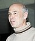 |
Pierre Deligne | Institut des hautes études scientifiques, France | Institute for Advanced Study, US[56] | "Gave solution of the three Weil conjectures concerning generalizations of the Riemann hypothesis to finite fields. His work did much to unify algebraic geometry and algebraic number theory."[57] |
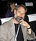 |
Charles Fefferman | Princeton University, US[58] | "Contributed several innovations that revised the study of multidimensional complex analysis by finding correct generalizations of classical (low-dimensional) results."[57] | |||
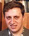 |
Grigory Margulis | Moscow State University, USSR | Yale University, US[59] | "Provided innovative analysis of the structure of Lie groups. His work belongs to combinatorics, differential geometry, ergodic theory, dynamical systems, and Lie groups."[57] | ||
| Daniel Quillen | Massachusetts Institute of Technology, US | University of Oxford, UK[60] | "The prime architect of the higher algebraic K-theory, a new tool that successfully employed geometric and topological methods and ideas to formulate and solve major problems in algebra, particularly ring theory and module theory."[57] | |||
| 1982 | Warsaw, Poland | 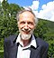 |
Alain Connes | Institut des hautes études scientifiques, France | Institut des hautes études scientifiques, France
Collège de France, France |
"Contributed to the theory of operator algebras, particularly the general classification and structure theorem of factors of type III, classification of automorphisms of the hyperfinite factor, classification of injective factors, and applications of the theory of C*-algebras to foliations and differential geometry in general."[62] |
| William Thurston | Princeton University, US | Cornell University, US[63] | "Revolutionized study of topology in 2 and 3 dimensions, showing interplay between analysis, topology, and geometry. Contributed idea that a very large class of closed 3-manifolds carry a hyperbolic structure."[62] | |||
| Shing-Tung Yau | Institute for Advanced Study, US | Tsinghua University, China[64] | "Made contributions in differential equations, also to the Calabi conjecture in algebraic geometry, to the positive mass conjecture of general relativity theory, and to real and complex Monge–Ampère equations."[62] | |||
| 1986 | Berkeley, US | 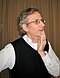 |
Simon Donaldson | University of Oxford, UK | Imperial College London, UK[65] Stony Brook University, US[66] | "Received medal primarily for his work on topology of four-manifolds, especially for showing that there is a differential structure on Euclidean four-space which is different from the usual structure."[67][68] |
| Gerd Faltings | Princeton University, US | Max Planck Institute for Mathematics, Germany[69] | "Using methods of arithmetic algebraic geometry, he received medal primarily for his proof of the Mordell Conjecture."[67] | |||
| Michael Freedman | University of California, San Diego, US | Microsoft Station Q, US[70] | "Developed new methods for topological analysis of four-manifolds. One of his results is a proof of the four-dimensional Poincaré Conjecture."[67] | |||
| 1990 | Kyoto, Japan | Vladimir Drinfeld | B Verkin Institute for Low Temperature Physics and Engineering, USSR[71] | University of Chicago, US[72] | "Drinfeld's main preoccupation in the last decade [are] Langlands' program and quantum groups. In both domains, Drinfeld's work constituted a decisive breakthrough and prompted a wealth of research."[73] | |
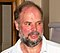 |
Vaughan Jones | University of California, Berkeley, US | University of California, Berkeley, US[74] | "Jones discovered an astonishing relationship between von Neumann algebras and geometric topology. As a result, he found a new polynomial invariant for knots and links in 3-space."[76] | ||

|
Shigefumi Mori | Kyoto University, Japan[77] | "The most profound and exciting development in algebraic geometry during the last decade or so was [...] Mori's Program in connection with the classification problems of algebraic varieties of dimension three." "Early in 1979, Mori brought to algebraic geometry a completely new excitement, that was his proof of Hartshorne's conjecture."[78] | |||

|
Edward Witten | Institute for Advanced Study, US[79] | "Time and again he has surprised the mathematical community by a brilliant application of physical insight leading to new and deep mathematical theorems."[80] | |||
| 1994 | Zürich, Switzerland | .jpg)
|
Jean Bourgain | Institut des hautes études scientifiques, France | Institute for Advanced Study, US[81] | "Bourgain's work touches on several central topics of mathematical analysis: the geometry of Banach spaces, convexity in high dimensions, harmonic analysis, ergodic theory, and finally, nonlinear partial differential equations from mathematical physics."[82] |
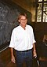 |
Pierre-Louis Lions | University of Paris 9, France | Collège de France, France
École polytechnique, France[83] |
"His contributions cover a variety of areas, from probability theory to partial differential equations (PDEs). Within the PDE area he has done several beautiful things in nonlinear equations. The choice of his problems have always been motivated by applications."[84] | ||
| Jean-Christophe Yoccoz | Paris-Sud 11 University, France | Collège de France, France[85] | "Yoccoz obtained a very enlightening proof of Bruno's theorem, and he was able to prove the converse [...] Palis and Yoccoz obtained a complete system of C∞ conjugation invariants for Morse-Smale diffeomorphisms."[86] | |||
| Efim Zelmanov | University of Wisconsin-Madison University of Chicago, US | Steklov Mathematical Institute, Russia, | "For the solution of the restricted Burnside problem."[88] | |||
| 1998 | Berlin, Germany | Richard Borcherds | University of California, Berkeley, US | University of California, Berkeley, US[89] | "For his contributions to algebra, the theory of automorphic forms, and mathematical physics, including the introduction of vertex algebras and Borcherds' Lie algebras, the proof of the Conway–Norton moonshine conjecture and the discovery of a new class of automorphic infinite products."[90] | |
| Timothy Gowers | University of Cambridge, UK[91] | "For his contributions to functional analysis and combinatorics, developing a new vision of infinite-dimensional geometry, including the solution of two of Banach's problems and the discovery of the so called Gowers' dichotomy: every infinite dimensional Banach space contains either a subspace with many symmetries (technically, with an unconditional basis) or a subspace every operator on which is Fredholm of index zero."[90] | ||||
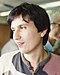 |
Maxim Kontsevich | Institut des hautes études scientifiques, France | "For his contributions to algebraic geometry, topology, and mathematical physics, including the proof of Witten's conjecture of intersection numbers in moduli spaces of stable curves, construction of the universal Vassiliev invariant of knots, and formal quantization of Poisson manifolds."[90] | |||
| Curtis T. McMullen | Harvard University, US[92] | "For his contributions to the theory of holomorphic dynamics and geometrization of three-manifolds, including proofs of Bers' conjecture on the density of cusp points in the boundary of the Teichmüller space, and Kra's theta-function conjecture."[90] | ||||
| 2002 | Beijing, China | 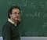 |
Laurent Lafforgue | Institut des hautes études scientifiques, France[93] | "Laurent Lafforgue has been awarded the Fields Medal for his proof of the Langlands correspondence for the full linear groups GLr (r≥1) over function fields of positive characteristic."[94] | |
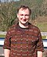 |
Vladimir Voevodsky | Institute for Advanced Study, US[95] | "He defined and developed motivic cohomology and the A1-homotopy theory, provided a framework for describing many new cohomology theories for algebraic varieties; he proved the Milnor conjectures on the K-theory of fields."[96] | |||
| 2006 | Madrid, Spain | .jpg)
|
Andrei Okounkov | Princeton University, US | Columbia University, US[97] | "For his contributions bridging probability, representation theory and algebraic geometry."[99] |
| Grigori Perelman (declined) | None | St. Petersburg Department of Steklov Institute of Mathematics of Russian Academy of Sciences, Russia[100] | "For his contributions to geometry and his revolutionary insights into the analytical and geometric structure of the Ricci flow."[99] | |||

|
Terence Tao | University of California, Los Angeles, US[101] | "For his contributions to partial differential equations, combinatorics, harmonic analysis and additive number theory."[99] | |||

|
Wendelin Werner | Paris-Sud 11 University, France | ETH Zurich, Switzerland[102] | "For his contributions to the development of stochastic Loewner evolution, the geometry of two-dimensional Brownian motion, and conformal field theory."[99] | ||
| 2010 | Hyderabad, India | 
|
Elon Lindenstrauss | Hebrew University of Jerusalem, Israel | Hebrew University of Jerusalem, Israel[103] | "For his results on measure rigidity in ergodic theory, and their applications to number theory."[104] |
| Ngô Bảo Châu | Paris-Sud 11 University, France | University of Chicago, US
Institute for Advanced Study, US[105] |
"For his proof of the Fundamental Lemma in the theory of automorphic forms through the introduction of new algebro-geometric methods."[104] | |||
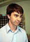 |
Stanislav Smirnov | University of Geneva, Switzerland | University of Geneva, Switzerland | "For the proof of conformal invariance of percolation and the planar Ising model in statistical physics."[104] | ||
| Cédric Villani | École Normale Supérieure de Lyon, France
Institut Henri Poincaré, France |
Lyon University, France
Institut Henri Poincaré, France[107] |
"For his proofs of nonlinear Landau damping and convergence to equilibrium for the Boltzmann equation."[104] | |||
| 2014 | Seoul, South Korea | Artur Avila | University of Paris VII, France
CNRS, France Instituto Nacional de Matemática Pura e Aplicada, Brazil |
University of Zurich, Switzerland | "For his profound contributions to dynamical systems theory, which have changed the face of the field, using the powerful idea of renormalization as a unifying principle."[108] | |
| Manjul Bhargava | Princeton University, US[109][110][111] | "For developing powerful new methods in the geometry of numbers, which he applied to count rings of small rank and to bound the average rank of elliptic curves."[108] | ||||
| Martin Hairer | University of Warwick, UK | École Polytechnique Fédérale de Lausanne, Switzerland | "For his outstanding contributions to the theory of stochastic partial differential equations, and in particular for the creation of a theory of regularity structures for such equations."[108] | |||
| Maryam Mirzakhani | Stanford University, US[112][113] | "For her outstanding contributions to the dynamics and geometry of Riemann surfaces and their moduli spaces."[108] | ||||
| 2018 | Rio de Janeiro, Brazil | 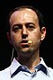 |
Caucher Birkar | University of Cambridge, UK | Tsinghua University, China | "For the proof of the boundedness of Fano varieties and for contributions to the minimal model program."[114] |
| Alessio Figalli | Swiss Federal Institute of Technology Zurich, Switzerland | "For contributions to the theory of optimal transport and its applications in partial differential equations, metric geometry and probability."[114] | ||||
| Peter Scholze | University of Bonn, Germany | "For having transformed arithmetic algebraic geometry over p-adic fields."[114] | ||||
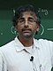 |
Akshay Venkatesh | Stanford University, US | Institute for Advanced Study, US[115] | "For his synthesis of analytic number theory, homogeneous dynamics, topology, and representation theory, which has resolved long-standing problems in areas such as the equidistribution of arithmetic objects."[114] | ||
| 2022 | Helsinki, Finland[a] | 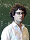 |
Hugo Duminil-Copin | Institut des hautes études scientifiques, France
University of Geneva, Switzerland[118] |
"For solving longstanding problems in the probabilistic theory of phase transitions in statistical physics, especially in dimensions three and four."[119] | |

|
June Huh | Princeton University, US | "For bringing the ideas of Hodge theory to combinatorics, the proof of the Dowling–Wilson conjecture for geometric lattices, the proof of the Heron–Rota–Welsh conjecture for matroids, the development of the theory of Lorentzian polynomials, and the proof of the strong Mason conjecture."[119] | |||

|
James Maynard | University of Oxford, UK | "For contributions to analytic number theory, which have led to major advances in the understanding of the structure of prime numbers and in Diophantine approximation."[119] | |||
| Maryna Viazovska | École Polytechnique Fédérale de Lausanne, Switzerland | "For the proof that the lattice provides the densest packing of identical spheres in 8 dimensions, and further contributions to related extremal problems and interpolation problems in Fourier analysis."[119][120] | ||||
| 2026 | Philadelphia, US | Yu Deng | University of Chicago, US | "For his work in partial differential equations, including the rigorous derivation of the Boltzmann equation from hard-sphere dynamics for rarefied gases, the derivation of wave kinetic equations from nonlinear dispersive systems, and probabilistic approaches to nonlinear Schrödinger dynamics."[121] | ||
| John Pardon | Stony Brook University, US | "For his achievements in symplectic geometry including new approaches to virtual fundamental cycles, Fukaya categories of certain manifolds and counting holomorphic curves, and for his contributions to other areas of geometry and topology, including group actions on 3-manifolds and knot theory."[121] | ||||
| Jacob Tsimerman | University of Toronto, Canada | "For his contribution in the recasting of o-minimality as a fundamental method of arithmetic and complex algebraic geometry, and his role in the proof of many central conjectures including Griffiths' conjecture on the algebraicity of images of the period maps, and the Andre-Oort conjecture for Siegel modular varieties."[121] | ||||
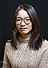 |
Hong Wang | New York University, US | "For her work in harmonic analysis and geometric measure theory, including applications of multiscale and decoupling techniques to the local smoothing conjecture for the planar wave equation, and major advances in Fourier restriction, Falconer distance sets, Furstenberg sets in the plane, and the Kakeya problem in three dimensions."[121] | |||
{kind=link}
{kind=link}
{kind=link}
{kind=link}
{kind=link}
{kind=link}
{kind=link}
{kind=link}
.jpg){kind=link}
{kind=link}
{kind=link}
{kind=link}
{kind=link}
{kind=link}
.jpg){kind=link}
{kind=link}
{kind=link}
_(cropped).jpg){kind=link}
{kind=link}
.jpg){kind=link}
{kind=link}
{kind=link}
{kind=link}
{kind=link}
{kind=link}
.jpg){kind=link}
{kind=link}
{kind=link}
{kind=link}
{kind=link}
{kind=link}
{kind=link}
.jpg){kind=link}
.jpg){kind=link}
{kind=link}
{kind=link}
_(cropped).jpg){kind=link}
{kind=link}
{kind=link}
.jpg){kind=link}
{kind=link}
{kind=link}
{kind=link}
{kind=link}
.jpg){kind=link}
.jpg){kind=link}
.jpg){kind=link}
.jpg){kind=link}
.jpg){kind=link}
{kind=link}
{kind=link}
{kind=link}
{kind=link}
Landmarks
The medal was first awarded in 1936 to the Finnish mathematician Lars Ahlfors and the American mathematician Jesse Douglas.
In 1954, Jean-Pierre Serre became the youngest winner of the Fields Medal, at 27.[122] He retains this distinction.[123]
In 1966, Alexander Grothendieck boycotted the ICM, held in Moscow, to protest against Soviet military actions taking place in Eastern Europe.[124] Léon Motchane, founder and director of the Institut des hautes études scientifiques, attended and accepted Grothendieck's Fields Medal on his behalf.[125]
In 1970, Sergei Novikov, because of restrictions placed on him by the Soviet government, was unable to travel to the congress in Nice to receive his medal.[123]
In 1978, Grigory Margulis, because of restrictions placed on him by the Soviet government, was unable to travel to the congress in Helsinki to receive his medal. The award was accepted on his behalf by Jacques Tits, who said in his address: "I cannot but express my deep disappointment—no doubt shared by many people here—in the absence of Margulis from this ceremony. In view of the symbolic meaning of this city of Helsinki, I had indeed grounds to hope that I would have a chance at last to meet a mathematician whom I know only through his work and for whom I have the greatest respect and admiration."[126]
In 1982, the congress was due to be held in Warsaw but had to be rescheduled to the next year, because of martial law introduced in Poland on 13 December 1981. The awards were announced at the ninth General Assembly of the IMU earlier in the year and awarded at the 1983 Warsaw congress.[127]
In 1990, Edward Witten became the first physicist to win the award.[128]
In 1998, at the ICM, Andrew Wiles was presented by the chair of the Fields Medal Committee, Yuri I. Manin, with the first-ever IMU silver plaque in recognition of his proof of Fermat's Last Theorem. Don Zagier referred to the plaque as a "quantized Fields Medal". Accounts of this award frequently make reference that at the time of the award Wiles was over the age limit for the Fields medal.[129] Although Wiles was slightly over the age limit in 1994, he was thought to be a favorite to win the medal; however, a gap (later resolved by Taylor and Wiles) in the proof was found in 1993.[130][131]
In 2006, Grigori Perelman, who proved the Poincaré conjecture, refused his Fields Medal, stating "I'm not interested in money or fame; I don't want to be on display like an animal in a zoo."[14][132] He did not attend the congress.[133]
In 2014, Maryam Mirzakhani became the first Iranian as well as the first woman to win the Fields Medal, Artur Avila became the first South American, and Manjul Bhargava became the first person of Indian origin to do so.[134][10]
Medal
The medal was designed by the Canadian sculptor R. Tait McKenzie.[135] It is made of 14KT gold, has a diameter of 63.5mm, and weighs 169g.[13]
- On the obverse is Archimedes and a quote attributed to 1st century AD poet Manilius, which reads in Latin: Transire suum pectus mundoque potiri ("To surpass one's understanding and master the world").[136][137] The year number 1933 is written in Roman numerals and contains an error (MCNXXXIII rather than MCMXXXIII).[138] In capital Greek letters the word Ἀρχιμηδους, or "of Archimedes," is inscribed.
- On the reverse is the inscription:
- Congregati
ex toto orbe
mathematici
ob scripta insignia
tribuere
- Congregati
Translation: "Mathematicians gathered from the entire world have awarded [understood but not written: 'this prize'] for outstanding writings."
In the background, there is the representation of Archimedes' tomb, with the carving illustrating his theorem On the Sphere and Cylinder, behind an olive branch. (This is the mathematical result of which Archimedes was reportedly most proud: Given a sphere and a circumscribed cylinder of the same height and diameter, the ratio between their volumes is equal to 2⁄3.)
The rim bears the name of the prizewinner.[137]
Female recipients
The Fields Medal has had three female recipients: Maryam Mirzakhani from Iran in 2014, Maryna Viazovska from Ukraine in 2022, and Hong Wang from China in 2026.[139]
In popular culture
The Fields Medal gained some recognition in popular culture due to references in the 1997 film, Good Will Hunting. In the movie, Gerald Lambeau (Stellan Skarsgård) is an MIT professor who won the award prior to the events of the story. Throughout the film, references made to the award are meant to convey its prestige in the field.[140] In the 2005–2010 TV series Numbers the leading character, mathematics professor Charlie Eppes, is portrayed as a Fields nominee. The series also references the popular myth concerning the absence of a Nobel Prize in mathematics, with a character jokingly claiming it was excluded because of a mathematician's romantic prowess with Alfred Nobel's fiancée.[141]
See also
Notes
- ^ ICM 2022 was originally planned to be held in Saint Petersburg, Russia, but was moved online following the 2022 Russian invasion of Ukraine. The award ceremony for the Fields Medals and prize winner lectures took place in Helsinki, Finland and were live-streamed.[116][117]
References
- ^ a b "About Us: The Fields Medal". The Fields Institute, University of Toronto. Archived from the original on 1 April 2022. Retrieved 21 August 2010.
- ^ "Top Award, ShanghaiRanking Academic Excellence Survey 2017 | Shanghai Ranking – 2017". Shanghairanking.com. Archived from the original on 17 October 2020. Retrieved 29 March 2018.
- ^ Ball, Philip (2014). "Iranian is first woman to nab highest prize in maths". Nature. doi:10.1038/nature.2014.15686. S2CID 180573813. Archived from the original on 8 October 2019. Retrieved 29 March 2018.
- ^ "Fields Medal". mathshistory.st-andrews.ac.uk. Archived from the original on 26 May 2021. Retrieved 29 March 2018.
- ^ "Fields Medal". The University of Chicago. Archived from the original on 7 April 2019. Retrieved 29 March 2018.
- ^ IREG Observatory on Academic Ranking and Excellence. IREG List of International Academic Awards (PDF). Brussels: IREG Observatory on Academic Ranking and Excellence. Archived from the original (PDF) on 12 March 2019. Retrieved 3 March 2018.
- ^ Zheng, Juntao; Liu, Niancai (2015). "Mapping of important international academic awards". Scientometrics. 104 (3): 763–791. doi:10.1007/s11192-015-1613-7. S2CID 25088286.
- ^ "President Rouhani Congratulates Iranian Woman for Winning Math Nobel Prize". Fars News Agency. 14 August 2014. Archived from the original on 26 December 2018. Retrieved 14 August 2014.
- ^ "IMU Prizes 2014". International Mathematical Union. Archived from the original on 26 December 2018. Retrieved 12 August 2014.
- ^ a b Dehghan, Saeed Kamali Dehghan (16 July 2017). "Maryam Mirzakhani: Iranian newspapers break hijab taboo in tributes". The Guardian. ISSN 0261-3077. Archived from the original on 18 July 2017.
- ^ "Edward Witten". World Science Festival. Archived from the original on 8 April 2022. Retrieved 14 September 2020.
- ^ Kollár, János (2014). "Is there a curse of the Fields medal?" (PDF). Princeton University. Archived (PDF) from the original on 9 March 2022. Retrieved 14 September 2020.
- ^ a b "Fields Medal". International Mathematical Union. Archived from the original on 26 December 2018. Retrieved 14 September 2020.
- ^ a b "Maths genius turns down top prize". BBC. 22 August 2006. Archived from the original on 15 August 2010. Retrieved 22 August 2006.
- ^ "Israeli wins 'Nobel' of Mathematics" Archived 23 May 2013 at the Wayback Machine, The Jerusalem Post
- ^ Fuller-Wright, Liz (5 July 2022). "Princeton mathematician June Huh awarded prestigious Fields Medal". Princeton University. Archived from the original on 23 July 2026. Retrieved 23 July 2026.
- ^ a b "Rules for the Fields Medal" (PDF). mathunion.org. Archived (PDF) from the original on 2 May 2018. Retrieved 1 May 2018.
- ^ Albers, Donald J.; Alexanderson, G. L.; Reid, Constance. International mathematical congresses. An illustrated history 1893–1986. Rev. ed. including ICM 1986. Springer-Verlag, New York, 1986
- ^ "ICM 2026". International Mathematical Union. Archived from the original on 10 February 2023. Retrieved 2 June 2024.
- ^ "The Fields Medalists, chronologically listed". International Mathematical Union (IMU). 8 May 2008. Archived from the original on 26 December 2018. Retrieved 25 March 2009.
- ^ "Lars Valerian Ahlfors (1907–1996)" (PDF). Ams.org. Archived (PDF) from the original on 3 March 2022. Retrieved 31 March 2017.
- ^ "Lars Ahlfors (1907–1996)". Harvard University, Dept. of Math. 7 November 2004. Archived from the original on 23 November 2014. Retrieved 19 August 2014.
- ^ a b "Fields Medals 1936". mathunion.org. International Mathematical Union. Archived from the original on 31 July 2020. Retrieved 7 April 2019.
- ^ "Jesse Douglas". Encyclopædia Britannica. 28 May 2010. Archived from the original on 3 September 2014. Retrieved 19 August 2014.
- ^ Mario J. Micallef; J. Gray. "The work of Jesse Douglas on Minimal Surfaces" (PDF). Wdb.ugr.es. Archived from the original (PDF) on 6 October 2014. Retrieved 31 March 2017.
- ^ "Laurent Moise Schwartz". School of Mathematics and Statistics University of St Andrews, Scotland. 24 June 2007. Archived from the original on 6 October 2014. Retrieved 19 August 2014.
- ^ Schwartz, Laurent (2001). Un mathématicien aux prises avec le siècle [A Mathematician Grappling with His Century]. AMS: Birkhäuser. ISBN 978-3-0348-7584-4.
- ^ a b "Fields Medals 1950". mathunion.org. International Mathematical Union. Archived from the original on 8 April 2022. Retrieved 7 April 2019.
- ^ "Remembering Atle Selberg, 1917–2007" (PDF). Ams.org. Archived (PDF) from the original on 23 November 2021. Retrieved 31 March 2017.
- ^ "Proceedings of the International Congress of Mathematicians" (PDF). Mathunion.org. 1954. Archived (PDF) from the original on 29 March 2022. Retrieved 31 March 2017.
- ^ Donald C. Spencer. "Kunihiko Kodaira (1915–1997)" (PDF). Ams.org. Archived (PDF) from the original on 23 February 2022. Retrieved 31 March 2017.
- ^ a b "Fields Medals 1954". mathunion.org. International Mathematical Union. Archived from the original on 8 April 2022. Retrieved 7 April 2019.
- ^ "Jean-Pierre Serre" (PDF). Math.rug.nl. Archived (PDF) from the original on 16 June 2016. Retrieved 31 March 2017.
- ^ "Jean-Pierre Serre". Encyclopædia Britannica. 5 February 1997. Archived from the original on 6 October 2014. Retrieved 19 August 2014.
- ^ McKinnon Riehm & Hoffman 2011, p. 212
- ^ a b H. Hopf. Proceedings of the International Congress of Mathematicians 1958. Archived 8 April 2022 at the Wayback Machine Report of the Inaugural Session. p. liv
- ^ "René Thom" (PDF). Robertnowlan.com. Archived from the original (PDF) on 27 May 2016. Retrieved 31 March 2017.
- ^ "A tribute to Lars Hörmander" (PDF). Smai.emath.fr. Archived (PDF) from the original on 4 June 2016. Retrieved 31 March 2017.
- ^ a b "Fields Medals 1962". mathunion.org. International Mathematical Union. Archived from the original on 8 April 2022. Retrieved 7 April 2019.
- ^ "John W. Milnor". Stony Brook University. 5 March 1997. Archived from the original on 30 August 2014. Retrieved 17 August 2014.
- ^ "Sir Michael F. Atiyah : The Abel Prize" (PDF). Upcommons.upc.edu (in Spanish). Archived (PDF) from the original on 16 June 2013. Retrieved 31 March 2017.
- ^ a b c d "Fields Medals 1966". mathunion.org. International Mathematical Union. Archived from the original on 22 March 2019. Retrieved 7 April 2019.
- ^ "Memorial Resolution – Paul Cohen (1934–2007)" (PDF). Stanford Historical Society. 2011. Archived from the original (PDF) on 5 January 2015. Retrieved 24 August 2014.
- ^ "Alexander Grothendieck" (PDF). Math.ucdenver.edu. Archived from the original (PDF) on 20 October 2016. Retrieved 31 March 2017.
- ^ "Prof. Stephen SMALE (史梅爾)". City University of Hong Kong. 5 April 2012. Archived from the original on 9 November 2014. Retrieved 18 August 2014.
- ^ "The Laureates". Heidelberg Laureate Forum Foundation (HLFF). 25 September 2013. Archived from the original on 18 October 2014. Retrieved 16 August 2014.
- ^ a b c d "Fields Medals 1970". mathunion.org. International Mathematical Union. Archived from the original on 8 April 2022. Retrieved 7 April 2019.
- ^ "Interview with Heisuke Hironaka" (PDF). Ams.org. Archived (PDF) from the original on 8 April 2022. Retrieved 31 March 2017.
- ^ "Professor Emeritus". Research Institute for Mathematical Sciences, Kyoto, Japan. 26 May 2007. Archived from the original on 5 April 2022. Retrieved 16 August 2014.
- ^ "Interview with Sergey P. Novikov" (PDF). Mi.ras.ru. Archived (PDF) from the original on 14 May 2016. Retrieved 31 March 2017.
- ^ "Novikov, Sergei Petrovich". Russian Academy of Science. 1 January 2012. Archived from the original on 26 July 2014. Retrieved 20 August 2014.
- ^ "John Griggs Thompson". Abelprize.no. Archived from the original (PDF) on 11 June 2016. Retrieved 31 March 2017.
- ^ Bartocci, Claudio; Betti, Renato; Guerraggio, Angelo; et al., eds. (2011). Vite Mathematiche [Mathematical Lives: Protagonists of the Twentieth Century From Hilbert to Wiles] (2011 ed.). Springer. pp. 2013–2014. ISBN 978-3642136054.
- ^ a b "Fields Medals 1974". mathunion.org. International Mathematical Union. Archived from the original on 8 April 2022. Retrieved 7 April 2019.
- ^ "David Mumford". The Division of Applied Mathematics, Brown University. Archived from the original on 6 October 2014. Retrieved 18 August 2014.
- ^ "Pierre Deligne". Abelprize.no. Archived from the original (PDF) on 3 March 2016. Retrieved 31 March 2017.
- ^ a b c d "Fields Medals 1978". mathunion.org. International Mathematical Union. Archived from the original on 10 October 2020. Retrieved 7 April 2019.
- ^ "CV : Charles Fefferman" (PDF). Archived (PDF) from the original on 8 April 2022. Retrieved 31 March 2017.
- ^ "Yale Mathematics Department: Gregory A. Margulis". Archived from the original on 5 January 2015. Retrieved 16 March 2015.
- ^ Friedlander, Eric; Grayson, Daniel (November 2012). "Daniel Quillen" (PDF). Notices of the AMS. 59 (10): 1392–1406. doi:10.1090/noti903. Archived (PDF) from the original on 8 April 2022. Retrieved 31 March 2017.
- ^ "Alain Connes". 25 May 2012. Archived from the original on 29 August 2014. Retrieved 18 August 2014.
- ^ a b c "Fields Medals and Nevanlinna Prize 1982". mathunion.org. International Mathematical Union. Archived from the original on 3 December 2018. Retrieved 7 April 2019.
- ^ "William P. Thurston, 1946–2012". 30 August 2012. Archived from the original on 21 August 2016. Retrieved 18 August 2014.
- ^ "CV : Shing-Tung Yau" (PDF). Doctoryau.com. Archived from the original on 25 October 2017. Retrieved 31 March 2017.
- ^ "Simon Donaldson (Royal Society Research Professor)". Department of Mathematics, Imperial College, Queen's Gate, London. 16 January 2008. Archived from the original on 15 September 2014. Retrieved 16 August 2014.
- ^ "Simon Donaldson". Archived from the original on 20 March 2015. Retrieved 16 March 2015.
- ^ a b c "Fields Medals and Nevanlinna Prize 1986". mathunion.org. International Mathematical Union. Archived from the original on 22 March 2019. Retrieved 7 April 2019.
- ^ "Fields Medals 1986". International Mathematical Union (IMU). 1986. Archived from the original on 24 January 2024. Retrieved 24 January 2024.
- ^ "The Laureates". Heidelberg Laureate Forum Foundation (HLFF). 6 October 2013. Archived from the original on 6 October 2014. Retrieved 16 August 2014.
- ^ Rob Kirby (2012). "Michael H. Freedman" (PDF). celebratio.org. Archived from the original (PDF) on 6 October 2014.
- ^ "Vladimir Gershonovich Drinfeld". Encyclopædia Britannica. 19 August 2009. Archived from the original on 10 August 2014. Retrieved 2 September 2014.
- ^ "Vladimir Gershonovich Drinfeld". School of Mathematics and Statistics, University of St Andrews, Scotland. 18 August 2009. Archived from the original on 6 October 2014. Retrieved 16 August 2014.
- ^ Yuri Ivanovich Manin. On the mathematical work of Vladimir Drinfeld. Proceedings of the International Congress of Mathematicians 1990. Volume I Archived 8 April 2022 at the Wayback Machine pp. 3–7
- ^ "Curriculum Vitae: Vaughan F. R. Jones". University of California, Berkeley. 10 November 2001. Archived from the original on 6 August 2013. Retrieved 16 August 2014.
- ^ Salisbury, David (6 April 2011). "Fields Medalist joins Vanderbilt faculty". Vanderbilt University. Archived from the original on 14 April 2011. Retrieved 17 May 2011.
- ^ Joan S. Birman. The work of Vaughan F. R. Jones. Proceedings of the International Congress of Mathematicians 1990. Volume I Archived 8 April 2022 at the Wayback Machine pp. 9–18
- ^ "The Laureates". Heidelberg Laureate Forum Foundation (HLFF). 10 April 2014. Archived from the original on 15 August 2014. Retrieved 16 August 2014.
- ^ Heisuke Hironaka. On the work of Shigefumi Mori. Proceedings of the International Congress of Mathematicians 1990. Volume I Archived 8 April 2022 at the Wayback Machine pp. 19–25
- ^ "Edward Witten – Vita" (PDF). 2011. Archived from the original (PDF) on 4 February 2012. Retrieved 26 October 2011.
- ^ Michael Atiyah. "On the Work of Edward Witten" (PDF). Mathunion.org. Archived from the original (PDF) on 1 March 2017. Retrieved 31 March 2017.
- ^ "CV : Jean Bourgain" (PDF). Math.ias.edu. Archived (PDF) from the original on 30 May 2017. Retrieved 31 March 2017.
- ^ Luis Caffarelli. The work of Jean Bourgain. Proceedings of the International Congress of Mathematicians 1994. Volume I Archived 8 April 2022 at the Wayback Machine pp. 3–5
- ^ "Collège de France". College-de-france.fr. 16 December 2013. Archived from the original on 15 September 2013. Retrieved 18 August 2014.
- ^ S. R. S. Varadhan. The work of Pierre-Louis Lions. Proceedings of the International Congress of Mathematicians 1994. Volume I Archived 8 April 2022 at the Wayback Machine pp. 6–10
- ^ "Collège de France". College-de-france.fr. 16 December 2013. Archived from the original on 5 January 2015. Retrieved 18 August 2014.
- ^ Adrien Douady. Presentation de Jean-Christophe Yoccoz. Proceedings of the International Congress of Mathematicians 1994. Volume I Archived 8 April 2022 at the Wayback Machine pp. 11–16
- ^ "CV : Efim Zelmanov" (PDF). Ime.usp.br. Archived (PDF) from the original on 2 July 2017. Retrieved 31 March 2017.
- ^ Walter Feit. On the Work of Efim Zelmanov. Proceedings of the International Congress of Mathematicians 1994. Volume I Archived 8 April 2022 at the Wayback Machine pp. 17–24
- ^ "The Laureates". Heidelberg Laureate Forum Foundation (HLFF). 10 April 2014. Archived from the original on 6 October 2014. Retrieved 16 August 2014.
- ^ a b c d Opening ceremony. Proceedings of the International Congress of Mathematicians 1998. Volume I Archived 22 April 2022 at the Wayback Machine pp. 46–48
- ^ "William Timothy Gowers". Encyclopædia Britannica. 28 March 2009. Archived from the original on 6 October 2014. Retrieved 16 August 2014.
- ^ "CV : Curtis T McMullen" (PDF). Abel.math.harvard.edu. Archived (PDF) from the original on 10 February 2017. Retrieved 31 March 2017.
- ^ "Curriculum Vitae". ihes. 6 December 2005. Archived from the original on 10 March 2022. Retrieved 19 August 2014.
- ^ Gérard Laumon. The work of Laurent Lafforgue. Proceedings of the International Congress of Mathematicians 2002. Volume I Archived 8 April 2022 at the Wayback Machine pp. 91–97
- ^ "CV : Vladimir Voevodsky" (PDF). Math.ias.edu. Archived (PDF) from the original on 2 April 2016. Retrieved 31 March 2017.
- ^ Christophe Soulé. The work of Vladimir Voevodsky. Proceedings of the International Congress of Mathematicians 2002. Volume I Archived 8 April 2022 at the Wayback Machine pp. 99–103
- ^ "Department of Mathematics". Columbia University, Department of Mathematics. 20 December 2012. Archived from the original on 6 October 2014. Retrieved 19 August 2014.
- ^ "Andrei Okounkov". math.berkeley.edu. Berkeley Mathematics. Archived from the original on 22 February 2023. Retrieved 22 August 2022.
- ^ a b c d Opening ceremony. Proceedings of the International Congress of Mathematicians 2006. Volume I Archived 8 April 2022 at the Wayback Machine p. 36
- ^ "Grigori Perelman | Biography & Facts". Encyclopædia Britannica. 28 May 2008. Archived from the original on 16 September 2014. Retrieved 19 August 2014.
- ^ "Vitae and Bibliography for Terence Tao". UCLA Dept. of Math. 16 March 2010. Archived from the original on 8 April 2000. Retrieved 19 August 2014.
- ^ "Wendelin WERNER". ETH Zurich. 18 September 2013. Archived from the original on 6 October 2014. Retrieved 19 August 2014.
- ^ "Nobel at HU". The Hebrew University of Jerusalem. 5 July 2011. Archived from the original on 14 August 2014. Retrieved 16 August 2014.
- ^ a b c d Opening ceremony. Proceedings of the International Congress of Mathematicians 2010. Volume I Archived 8 April 2022 at the Wayback Machine p. 23
- ^ "Ngô Bảo Châu › Heidelberg Laureate Forum". Archived from the original on 7 February 2015. Retrieved 16 March 2015.
- ^ "Home Page of Stanislav Smirnov". Archived from the original on 19 June 2013. Retrieved 16 March 2015.
- ^ "CV : Cédric Villani" (PDF). Cedricvillani.org. Archived from the original (PDF) on 23 June 2016. Retrieved 31 March 2017.
- ^ a b c d Opening ceremony. Proceedings of the International Congress of Mathematicians 2014. Volume I Archived 8 April 2022 at the Wayback Machine p. 23
- ^ "CV : Manjul Bhargava" (PDF). 2.maths.ox.ac.uk. Archived (PDF) from the original on 22 December 2014. Retrieved 31 March 2017.
- ^ "The Work of Manjul Bhargava" (PDF). Mathunion.org. Archived from the original (PDF) on 13 July 2017. Retrieved 31 March 2017.
- ^ "Faculty". The Princeton University, Department of Mathematics. 8 May 2012. Archived from the original on 25 December 2014. Retrieved 19 December 2014.
- ^ "Interview with Research Fellow Maryam Mirzakhani" (PDF). Archived (PDF) from the original on 27 August 2014. Retrieved 24 August 2014.
- ^ "Department of Mathematics". Stanford University. 22 January 2009. Archived from the original on 21 December 2014. Retrieved 19 December 2014.
- ^ a b c d Opening ceremonies. Proceedings of the International Congress of Mathematicians 2018. Volume I Archived 8 April 2022 at the Wayback Machine pp. 13–16
- ^ "Faculty Appointee Akshay Venkatesh Awarded 2018 Fields Medal". August 2018. Archived from the original on 24 January 2022. Retrieved 2 August 2018.
- ^ "Decision of the Executive Committee of the IMU on the upcoming ICM 2022 and IMU General Assembly" (PDF). Archived (PDF) from the original on 2 April 2022. Retrieved 5 July 2022.
- ^ "Virtual ICM 2022". International Mathematical Union. Archived from the original on 1 June 2023. Retrieved 5 July 2022.
- ^ "Hugo Duminil-Copin – Fields Medal 2022 – UNIGE". 28 June 2022. Archived from the original on 6 July 2022. Retrieved 5 July 2022.
- ^ a b c d "Fields Medals 2022". International Mathematical Union. Archived from the original on 5 July 2022. Retrieved 5 July 2022.
- ^ Lin, Thomas; Klarreich, Erica (5 July 2022). "Ukrainian Mathematician Maryna Viazovska Wins Fields Medal". Archived from the original on 5 July 2022. Retrieved 18 July 2022.
- ^ a b c d "Fields Medals 2026". International Mathematical Union. Archived from the original on 23 July 2026. Retrieved 23 July 2026.
- ^ Nawlakhe, Anil; Nawlakhe, Ujwala; Wilson, Robin (July 2011). "Fields Medallists". Stamp Corner. The Mathematical Intelligencer. 33 (4): 70. doi:10.1007/s00283-011-9244-1. S2CID 189866710.
- ^ a b Raikar, Sanat Pai (8 May 2023). "Fields Medal". Encyclopædia Britannica. Archived from the original on 7 February 2022. Retrieved 22 June 2023.
- ^ Jackson, Allyn (October 2004). "As If Summoned from the Void: The Life of Alexandre Grothendieck" (PDF). Notices of the American Mathematical Society. 51 (9): 1198. Archived (PDF) from the original on 25 August 2006. Retrieved 26 August 2006.
- ^ "This Mathematical Month – August". American Mathematical Society. Archived from the original on 11 August 2010.
- ^ Margulis biography Archived 19 October 2019 at the Wayback Machine, School of Mathematics and Statistics, University of St Andrews, Scotland. Retrieved 27 August 2006.
- ^ "1982 ICM – Warsaw". Maths History. Archived from the original on 5 June 2024. Retrieved 5 June 2024.
- ^ "The National Medal of Science 50th Anniversary". National Science Foundation. Archived from the original on 22 June 2022. Retrieved 30 August 2022.
- ^ Wiles, Andrew John Archived 27 August 2008 at the Wayback Machine, Encyclopædia Britannica. Retrieved 27 August 2006.
- ^ Fields Medal Prize Winners (1998), 2002 International Congress of Mathematicians. Retrieved 27 August 2006. Archived 27 September 2007 at the Wayback Machine
- ^ "Borcherds, Gowers, Kontsevich, and McMullen Receive Fields Medals" (PDF). Notices of the AMS. 45 (10): 1359. November 1998. Archived (PDF) from the original on 23 April 2021. Retrieved 28 April 2021.
- ^ "Russian maths genius Perelman urged to take $1m prize". BBC News. 24 March 2010. Archived from the original on 14 December 2025. Retrieved 21 February 2026.
- ^ Nasar, Sylvia; Gruber, David (21 August 2006). "Manifold Destiny: A legendary problem and the battle over who solved it". The New Yorker. Archived from the original on 31 August 2006. Retrieved 24 August 2006.
- ^ UNESCO (2015). A Complex Formula: Girls and Women in Science, Technology, Engineering and Mathematics in Asia (PDF). Paris, UNESCO. p. 23. ISBN 978-92-9223-492-8. Archived (PDF) from the original on 15 November 2017. Retrieved 3 May 2017.
- ^ "Fields Institute – The Fields Medal". Fields.utoronto.ca. 9 August 1932. Archived from the original on 1 April 2022. Retrieved 21 August 2010.
- ^ Riehm, C. (2002). "The early history of the Fields Medal" (PDF). Notices of the AMS. 49 (7): 778–782. Archived (PDF) from the original on 26 October 2006. Retrieved 28 April 2021.
The Latin inscription from the Roman poet Manilius surrounding the image may be translated 'To pass beyond your understanding and make yourself master of the universe.' The phrase comes from Manilius's Astronomica 4.392 from the first century A.D. (p. 782).
- ^ a b "The Fields Medal". Fields Institute for Research in Mathematical Sciences. 5 February 2015. Archived from the original on 23 April 2021. Retrieved 23 April 2021.
- ^ Knobloch, Eberhard (2008). "Generality and Infinitely Small Quantities in Leibniz's Mathematics: The Case of his Arithmetical Quadrature of Conic Sections and Related Curves". In Goldenbaum, Ursula; Jesseph, Douglas (eds.). Infinitesimal Differences: Controversies between Leibniz and his Contemporaries. Walter de Gruyter.
- ^ Howlett, Joseph (23 July 2026). "Four young mathematicians awarded the 2026 Fields Medals". Scientific American. Archived from the original on 23 July 2026. Retrieved 23 July 2026.
- ^ "Maths gives its 'Nobel Prize' to an Australian — here's why it matters". ABC News. 1 August 2018. Archived from the original on 8 April 2022. Retrieved 20 December 2021.
- ^ "Obsession". NUMB3RS. Season 2. Episode 3. 7 October 2005. CBS.
Further reading
- McKinnon Riehm, Elaine; Hoffman, Frances (2011). Turbulent Times in Mathematics: The Life of J.C. Fields and the History of the Fields Medal. Providence, RI: American Mathematical Society. ISBN 978-0-8218-6914-7.
- Monastyrsky, Michael (1998). Modern Mathematics in the Light of the Fields Medal. Wellesley, MA: A. K. Peters. ISBN 1-56881-083-0.
- Tropp, Henry S. (1976). "The Origins and History of the Fields Medal". Historia Mathematica. 3 (2): 167–181. doi:10.1016/0315-0860(76)90033-1.